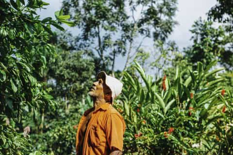
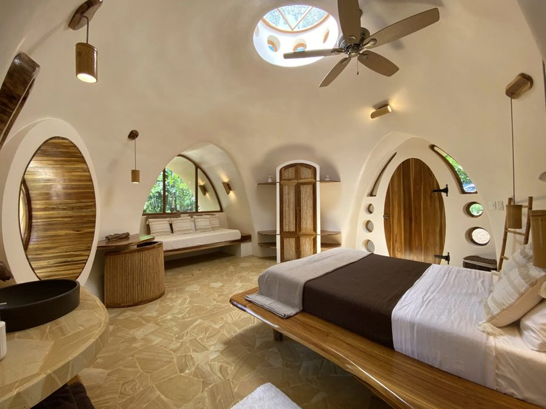
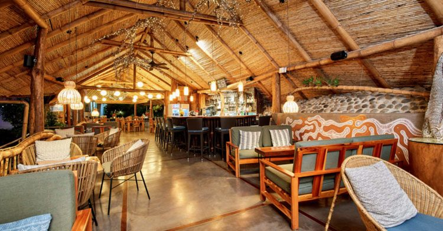

Fincas, hospedajes y negocios locales para conocer nuestra comunidad.

Finca de café y chocolate con tours, senderos y hospedaje, dirigida por la familia Villegas.
Emprendimiento local de costura y artesanía de la comunidad.

Cooperativa de hospedaje enfocada en agricultura regenerativa y turismo sostenible.

Finca orgánica desde 1994, convertida en eco-lodge en 1999 por sus copropietarios Tom y Terry Newmark.
Cómo llegar: San Juan de Peñas Blancas está a unos 15 km al sur de La Fortuna, junto al Centro Soltis de Texas A&M, sobre un camino parcialmente pavimentado.